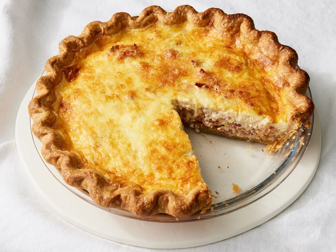

Quiche Lorraine

Description
Quiche Lorraine is a French classic. Perfect for breakfast, brunch, lunch, dinner, or just an indulgent snack!
Ingredients
- 12 slices bacon
- 1 cup shredded Swiss cheese
- 1/3 cup minced onion
- 1 (9 inch) prepared pie crust
- 2 cups light cream
- 4 large eggs, beaten
- 3/4 teaspoon salt
- 14 teaspoon white sugar
- 1/8 teaspoon cayenne pepper
Steps
- Preheat the oven to 425 degrees F (220 degrees C).
- Place bacon in a large skillet and cook over medium-high heat, turning occasionally, until evenly browned, about 10 minutes. Drain bacon slices on paper towels, then chop coarsely.
- Sprinkle bacon, Swiss cheese, and onion into pastry shell.
- Whisk cream, eggs, salt, sugar, and cayenne pepper in a medium bowl. Pour mixture into pastry shell.
- Bake in the preheated oven for 15 minutes. Reduce heat to 300 degrees F (150 degrees C) and continue baking until a knife inserted 1 inch from the edge comes out clean, about 30 minutes.
- Allow quiche to sit 10 minutes before cutting into wedges.
- Serve and enjoy!
More Info
Source (All Recipes)
Back to Home